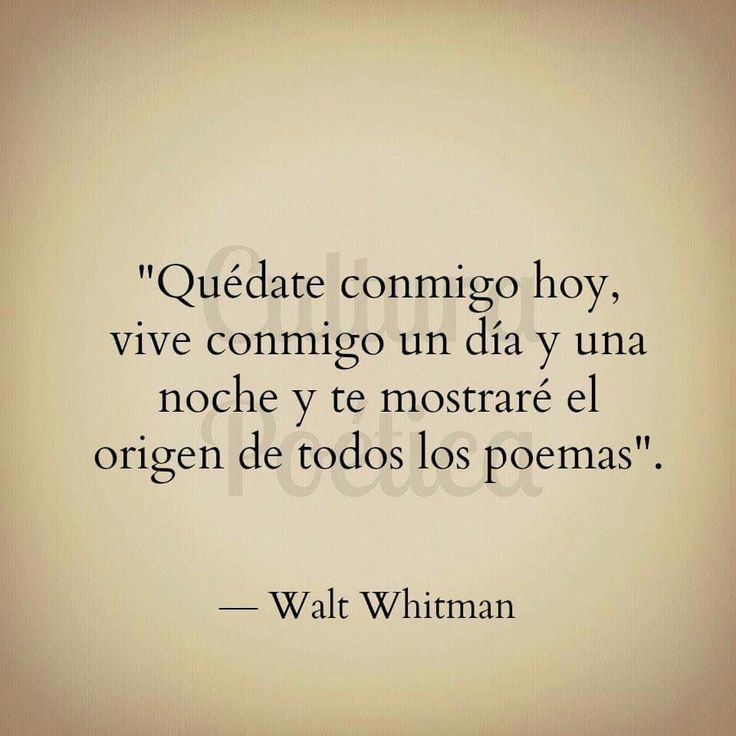

La celebración del individuo como parte
|
Poemas de Walt Whitman |

UN CLIC Y PODRÁ LEER EL POEMA
Whitman rompe con la métrica tradicional y se lanza al verso libre. Sus poemas carecen de rima y medida fija, pero poseen un ritmo expansivo que recuerda a la prosa bíblica. La amplitud de sus versos, llenos de enumeraciones y repeticiones, crea una sensación de movimiento continuo y celebración universal. Su métrica es la libertad misma, y en ella cabe la totalidad de la experiencia humana.